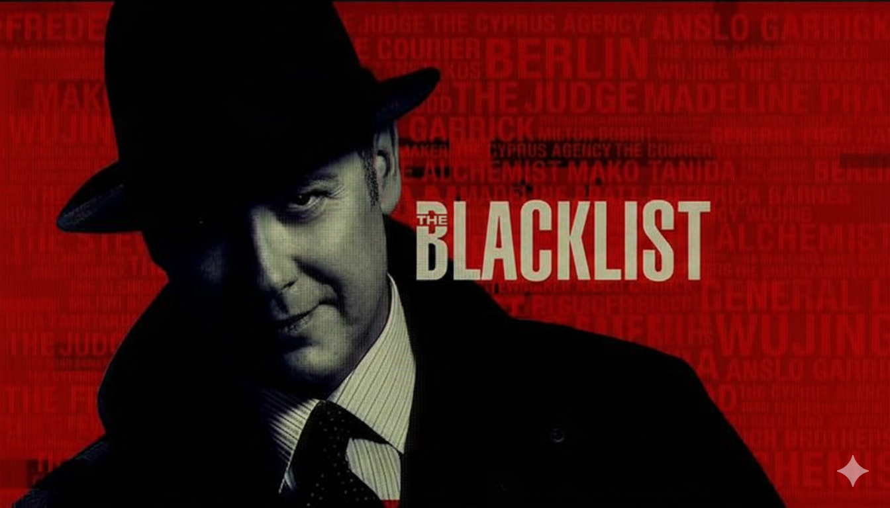

-
1.
Breaking Bad

At first glance, Breaking Bad appears to end conventionally: loose ends are tied up, enemies are defeated, and justice seems to arrive. But the true unconventional nature of the ending lies beneath the surface.
Walter White does not redeem himself. He does not reclaim his family. Instead, the finale delivers a brutal clarity: everything he did was driven by ego, pride, and desire for control. His final admission—“I did it for me”—collapses years of self-justification.
The ending isn’t about victory or punishment; it’s about truth. Walter dies having finally understood who he really is. The audience is left not with relief, but with the uneasy realization that they once rooted for a monster.
Walter White’s journey ends exactly where his transformation demands. After dismantling the empire he built, Walter dies alone in a meth lab, bleeding out beside the machines that defined his identity.
-
2.
The Dark Knight Rises

On the surface, The Dark Knight Rises seems hopeful: Gotham is saved, Bruce Wayne appears to find peace, and Batman becomes a legend rather than a man. Yet the ending is far more ambiguous than it appears.
Batman does not receive public redemption. His victory depends on a lie—the preservation of Harvey Dent’s false legacy. Gotham’s peace is built on deception, not truth. Whether Bruce Wayne survives or truly escapes his identity is left deliberately unclear.
Batman sacrifices himself to save Gotham by flying a nuclear bomb away from the city. To the world, Batman dies as a hero. The symbol of Batman is laid to rest so the city can move forward—built on hope, but also on a lie.
The trilogy ends by asking a dangerous question: Is a lie justified if it preserves order?
-
3.
The Blacklist
Few shows embraced mystery as aggressively as The Blacklist, and few endings divided audiences as sharply. After years of unanswered questions surrounding Raymond Reddington’s identity and motives, the series ends not with clarity—but with inevitability.
The final moments focus less on answers and more on consequence. Reddington’s death is quiet, symbolic, and stripped of spectacle. The mysteries remain partially unresolved, forcing viewers to confront the uncomfortable idea that some truths are never meant to be fully known.
Raymond Reddington’s end is quiet, symbolic, and deliberately unresolved. Sick and weary, he walks into a bullring and meets his death off-screen. The series refuses to explain everything, allowing mystery to outlive the man himself.
-
4.
The Godfather Part III

Unlike the operatic violence of the earlier films, The Godfather Part III ends in silence.
Michael Corleone survives—but that survival is the punishment. He loses his daughter, his legacy, and any hope of redemption. The final image of an old, broken Michael dying alone is not tragic in a dramatic sense—it is tragic in a spiritual one.
There is no power left to protect him. No family left to justify his crimes. Only the weight of irreversible choices.
Michael Corleone survives his enemies but not his past. After losing his daughter, he spends his final years in isolation, stripped of power, family, and purpose. His death is quiet, empty, and unforgiving.
In the closing scene, Michael Corleone dies alone, slumped in a chair, powerless and forgotten. There is no music, no violence, no redemption—only silence.
The punishment is not death itself, but the long life lived after everything meaningful has been lost.